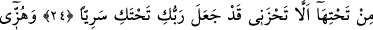

HZ. MERYEM’İN
HZ. ÎSÂ’YA
GEBE KALMASI
22. (Meryem), ona gebe kaldı. Onunla uzak bir yere çekildi.
23. Doğum sancısı onu, bir hurma dalı(nın altı)na getirdi: “Keşke bundan önce
ölseydim, unutulup gitseydim!” dedi.
24. Altından (ruh) ona şöyle seslendi: “Üzülme, Rabb’in alt tarafında bir su arkı
var etti.”
25. “Hurma dalını kendine doğru silkele, üzerine olgunlaşmış, taze hurma
dökülsün.”
26. “Ye, iç, gözün aydın olsun! Eğer insanlardan birini görürsen: ‘Ben Rahman
için (susma) oruc(u) adadım, bugün hiçbir insanla konuşmayacağım’ de.”
“Meryem, ona gebe kaldı.” İbn Abbas (r.anhümâ) der ki: Meryem, Cebrâil’in
sözüyle tatmin oldu, Cebrâil ona yaklaştı, elbisesinin yakasına üfledi. Bu nefes onun
karnına kadar ulaştı. Bu üflemenin ardından İsa’ya gebe kaldı.
Fakir (Bursevî) ise şöyle der: Üflemenin karına ulaşması için ağız ve benzeri
menfezlere gerek yoktur. Görmez misin ki ruh Âdem (a.s.)’ın bedenine başın üst
ortasından (el-yâfûh) girdi. Sertleştiği zaman bu bölgeye ‘yâfûh’ denir. Çocukların
başında olduğu gibi sertleşmeden önce ise ‘el-Fâdiye (bıngıldak)’ denir. Sonra oradan
Âdem’in gözlerine, sonra ağzına daha sonra da diğer uzuvlarına indi.
Bilesin ki İsa (a.s.)’ın bir cismanî, bir ruhânî, bir de her ikisini toplayan “ahadiyyet”
yönü vardır. Cismanî tarafına bakılırsa onun Meryem’in suyundan meydana geldiği
zannedilir. Ölüleri diriltme, çamurdan kuş yaratma gibi rûhânî özelliklerine bakılırsa
Cebrâil’in üflemesiyle meydana geldiğine hükmedilir. Bu her iki yönü de toplayan
ahadiyyet yönüne bakıldığında, her ikisinden meydana geldiği söylenir. Gerçek şu ki,